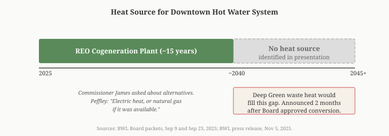
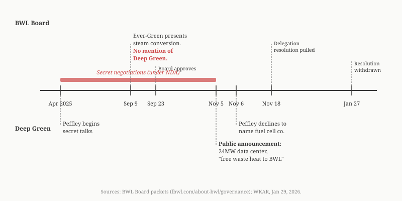

Lansing: Did BWL's Board Know About Deep Green When It Approved a $100M Steam Conversion?
On September 9, 2025, BWL's Board of Commissioners received a 26-slide presentation on a $100 million plan to convert downtown Lansing's steam heating system to hot water. The words "Deep Green," "data center," "waste heat," and "fuel cell" do not appear in the presentation, but BWL General Manager Dick Peffley had been negotiating with Deep Green Technologies for approximately five months at the time, according to his own account to WKAR. The conversion creates a heat source gap that Deep Green's waste heat would fill, and the same engineering firm, Ever-Green Energy, designed the conversion for BWL and validated the financial projections for Deep Green.
LANSING, Mich. — The Lansing Board of Water and Light (BWL) operates approximately 9.7 miles of underground steam piping downtown, some dating to the 1920s, serving nearly 200 customers across 140 buildings totaling 2.8 million square feet. The system heats the State Capitol, the Hall of Justice, Lansing Community College, and Michigan State Police headquarters, among others. (BWL Steam & Hot Water; Ever-Green Energy)
The plan presented by Ever-Green Energy, a Minneapolis engineering firm, would replace the aging steam network with a 4.5-mile hot water distribution system concentrated in the downtown core. The price tag is $100 million, or $125 million adjusted for inflation. The alternative, full steam replacement, would cost $260 million. BWL has received $5 million in state funding and has requested $10 million more. (BWL Board minutes, September 23, 2025, lbwl.com/about-bwl/governance, bwl-board-packet-2025-09-23.pdf)
The Conversion
| Detail | Current System | New System |
|---|---|---|
| Distribution | ~9.7 miles steam pipe | 4.5 miles hot water pipe |
| Customers (centralized) | ~200 | 55 |
| Cost | $100M ($125M with inflation) | |
| Alternative (full steam replacement) | $260M | |
| State funding | $5M received, $10M requested | |
| Transition period | ~15 years |
BWL is concentrating the system in the downtown core, reducing the network from ~9.7 miles to 4.5. Of the nearly 200 current customers, 55 — representing about 90 percent of existing revenue — will remain on the centralized hot water system. Another 59 will receive individual boilers installed by BWL at costs of $15,000 to $53,000 each.
Todd Russell, BWL's Water, Steam & Chilled Water Distribution Manager, explained the rationale: "There is only one customer on the system until north of Highway 496 and the plants and the distribution system will be moved into the downtown district." Eliminating the long pipe run south of I-496 from the REO plant to downtown, which serves only one customer, accounts for much of the reduction. (BWL Board minutes, September 23, 2025)
Commissioner Worthy asked about the revenue impact. Peffley responded that not all customers have infrastructure for their own systems, and "Consumers Energy doesn't have adequate gas to service all of them." (BWL Board minutes, September 23, 2025)
The Heat Source Gap
During the 15-year transition, the conversion relies on BWL's existing REO Cogeneration Plant (1201 S Washington Ave). Steam from the REO plant feeds a new converter station (Ottawa SCS), which converts it to hot water for the new downtown pipe network. After 15 years, the REO plant shuts down. Todd Russell told the Board the building would be "turned over to the city." (BWL Board minutes, September 23, 2025)
The Ever-Green Energy presentation does not identify a post-REO heat source. Commissioner James asked about alternatives. Peffley's response: "Electric heat, or natural gas if it was available." No specific plan was presented. (BWL Board packets, September 23, 2025)

Deep Green Fills the Gap
Two months after the Board approved the steam conversion, BWL announced the Deep Green data center. The November 5, 2025 press release led with the project's central value proposition: free waste heat donated to BWL's hot water loop.
The fuel cells proposed for Deep Green produce waste heat that can be captured for district heating — exactly what BWL's new hot water system needs. (Bloom Energy CHP page) Deep Green CEO Mark Lee's February 5, 2026 letter to Council confirmed that the heat and cost calculations were validated by EverGreen [sic] Energy, BWL's own consultant on the steam conversion. (mark lee deep green.pdf, CivicClerk, Lansing City Council February 9, 2026 hearing packet)
WKAR reported on January 29, 2026 that BWL was negotiating a 20-year contract with Deep Green. The 20-year term would overlap with the 15-year steam conversion timeline.
The Timeline
| Date | BWL Board Action | Deep Green Status |
|---|---|---|
| 2024 | "Decision was made to transition steam to hot water" (Todd Russell) | Pre-negotiation |
| 2024 | Ever-Green Energy engaged as Phase 1 owner-engineer | Pre-negotiation |
| ~April 2025 | Peffley begins talks with Deep Green | |
| Sep 9, 2025 | Ever-Green presents steam conversion to Committee of the Whole (COW). Zero mention of Deep Green. | 5 months into negotiations |
| Sep 23, 2025 | Board approves steam conversion | Negotiations ongoing under NDA |
| Nov 5, 2025 | Public announcement: 24MW data center with "free waste heat to BWL" | |
| Nov 6, 2025 | Peffley declines to name fuel cell company, citing NDA | NDA still active |
| Nov 18, 2025 | Delegation resolution — authorizing Peffley to finalize Deep Green terms without further Board vote — pulled after LWVLA letter and 17 resident emails (BWL Board packet, Nov 18, 2025) | Public opposition mounting |
| Jan 27, 2026 | Delegation resolution formally withdrawn | WKAR reports 20-year contract |
Sources: BWL Board packets, September 2025 through January 2026 (lbwl.com/about-bwl/governance); WKAR, Jan 29, 2026; BWL press release, Nov 5, 2025.

The League of Women Voters of the Lansing Area identified the governance pattern in their November 13, 2025 letter opposing the delegation resolution: "The resolution under consideration would thwart these important goals" of public accountability. The resolution was pulled on November 18, then formally withdrawn on January 27, 2026. (BWL Board packet, November 18, 2025; BWL Board packet, January 27, 2026)
"Considered Clean Energy in Two States"
At the November 6, 2025 Committee of the Whole, Commissioner Schrader asked Peffley "if the fuel cell was considered clean energy." Peffley responded that it was "considered clean energy in two states so far." (BWL Board packet, November 18, 2025, p. 39)
The two states are almost certainly Delaware and California. Both have since moved away from Bloom subsidies. In Delaware, $580 million in ratepayer-funded incentives produced under half the promised jobs; a state senator said they were "sold a bill of goods." California ended its fuel cell subsidy program. New Jersey pulled fuel cell subsidies entirely. (For the full record on Bloom Energy, see: The Company Behind Deep Green's Fuel Cells Has Been Fined, Sued, and Subsidized in Three States.)
The Same Consultant Validates Both Sides
Ever-Green Energy designed the steam-to-hot-water conversion master plan in 2020, was engaged for Phase 1 implementation support in 2024, and presented the conversion to the BWL Board on September 9, 2025.
Ever-Green Energy is a subsidiary of District Energy St. Paul, Inc., a 501(c)(3) nonprofit that reported $61.5 million in revenue and $172 million in assets in FY2023 (IRS 990, EIN 41-1358662). The firm's business model is full-lifecycle district energy: it designs systems, manages construction, and then operates them long-term. It has followed this pattern at Oberlin College, Mission Rock in San Francisco, Duluth Energy Systems, and others. The firm that specifies the equipment and designs the system is uniquely positioned to argue it is the only qualified operator.
Deep Green CEO Mark Lee's February 5, 2026 letter to Council states that heat and cost calculations for the Deep Green project were developed "in partnership with BWL and EverGreen [sic]" and "validated by EverGreen [sic] Energy." (mark lee deep green.pdf, CivicClerk, Lansing City Council February 9, 2026 hearing packet) The same firm has a commercial relationship with BWL for the steam conversion and validated the financial projections for the project that would supply the system's long-term heat source. If Ever-Green Energy follows its established pattern, it would also be positioned to operate the resulting system.
Phase 1: Grand Avenue and Wentworth Park
The Ever-Green Energy presentation identifies four Phase 1 milestones:
| Milestone | Year |
|---|---|
| Ottawa SCS (converter station) construction | 2025 |
| Commence Grand Avenue construction | 2026 |
| Ottawa St, Grand Ave & LCC customers on hot water | 2027 |
| Commence Capital Avenue construction | 2028 |
Source: bwl-cow-packet-2025-09-09.pdf, slides 24-26.
Wentworth Park sits at 100 N Grand Avenue, directly on the Phase 1 construction corridor. The park contains the Rotary Steam Clock, a 31-foot clock tower powered by BWL's steam system since 1997. Converting the steam infrastructure at this location to hot water would affect the clock's operation. (Atlas Obscura; Lansing Rotary)
"BWL Wentworth Park Steam Conversion" appeared on the Lansing Parks & Recreation Advisory Board December 10, 2025 agenda as Old Business item IV.A. The December 10 agenda listed five Old Business items. The minutes listed three:
| Label | Item (Agenda) | Item (Minutes) |
|---|---|---|
| A | BWL Wentworth Park Steam Conversion | 5 - Year Plan |
| B | 5 - Year Plan | Kircher Park Memorial Request |
| C | Kircher Park Memorial Request | Ranney Park Additional Lighting |
| D | Ranney Park Additional Lighting | |
| E | Property Adjacent to Osborn Park |
Two items are missing from the minutes, and the remaining three were relabeled A through C to close the gap. When an agenda item is not discussed, standard practice is to note "Item tabled" or "No report." (CivicClerk fileId 11081 and 11245)
The December agenda lists the BWL item under Old Business, meaning it was introduced at a prior meeting. The only candidate is November 12, 2025 (CivicClerk Event 7336) — one week after the Deep Green public announcement. That meeting has zero documents in CivicClerk: no agenda, no minutes, no attachments. It is the only month in 2025 without at least an agenda uploaded.
After December 10, the item has not appeared on any subsequent Park Board agenda through March 2026. No resolution, tabling, or explanation was recorded. Under MCL 15.269, public body minutes must include "any decisions made at a meeting open to the public."
BWL has used park land for infrastructure before. In 2016-2019, Scott Sunken Garden was relocated brick-by-brick to build BWL's $26 million Central Substation on the original site (TCLF; BWL). In 2024-2025, trees were cut in Benjamin Davis Park for BWL's South Reinforcement power line routing (WILX, Nov 13, 2024). In each prior case, the Park Board acted publicly. Grand Avenue construction is scheduled for 2026. No public body has addressed what happens to Wentworth Park.
Methodology
This analysis is based on BWL Board of Commissioners meeting packets and minutes from September 2025 through March 2026, downloaded from lbwl.com/about-bwl/governance. The Ever-Green Energy presentation is in the September 9, 2025 COW packet (bwl-cow-packet-2025-09-09.pdf, slides 1-26). Board minutes are from the September 23, 2025 meeting (bwl-board-packet-2025-09-23.pdf). The November 6 COW discussion is documented in the November 18, 2025 Board packet (p. 39). Deep Green CEO Mark Lee's letter is in the February 9, 2026 Council hearing packet on CivicClerk. News sources: WKAR (Jan 29, 2026); WILX (Aug 14, 2025). Bloom Energy subsidy and emissions data: A Better Delaware, Heritage Foundation, NBC Bay Area, Institute for Energy Research. Ever-Green Energy corporate structure: ProPublica Nonprofit Explorer, EIN 41-1358662 (District Energy St. Paul, Inc., FY2023 990). Project portfolio: ever-greenenergy.com/our-work. Park Board records: CivicClerk Category ID 61, fileId 11081 (December 2025 agenda), fileId 11245 (December 2025 minutes), Events 7331-7340 (January 2025 through March 2026). Michigan Open Meetings Act: MCL 15.269. Prior BWL park land cases: TCLF (Scott Sunken Garden), BWL (Central Substation), WILX (Benjamin Davis Park). Steam clock: Atlas Obscura, Lansing Rotary.